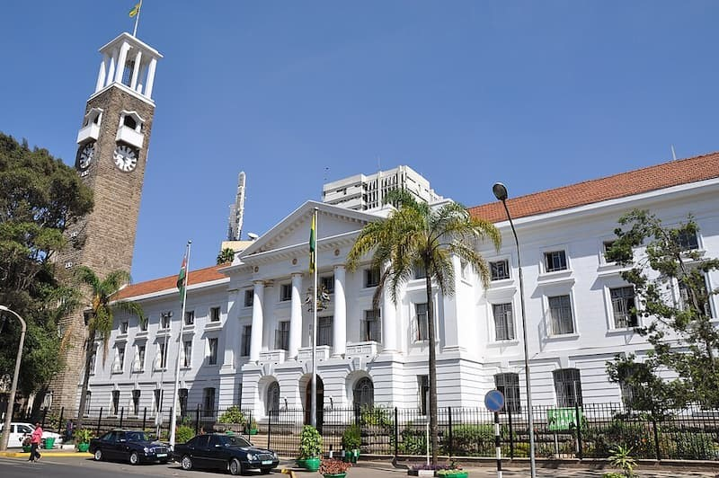

Nairobi, the capital city of Kenya, is one of the most dynamic cities in Africa. It is known as the “Green City in the Sun” because of its pleasant climate and the many trees and natural spaces within and around it. Nairobi is a major economic, political, and cultural center in East Africa, hosting international organizations, businesses, and a diverse population that makes the city very vibrant and multicultural. It is also unique because it is the only capital city in the world with a national park located within its borders, where wildlife such as lions, giraffes, and zebras can be seen against a backdrop of city skyscrapers.
I love Nairobi because it has a perfect balance between modern city life and natural beauty. The city is always busy and full of energy, with markets,restaurants, and a growing tech scene often called “Silicon Savannah.” At the same time, there are peaceful escapes like Nairobi National Park, Karura Forest, and the Ngong Hills nearby, where you can relax and enjoy nature. The people in Nairobi are also warm and diverse, representing different cultures from all over Kenya and beyond, which makes the city feel alive and welcoming.
